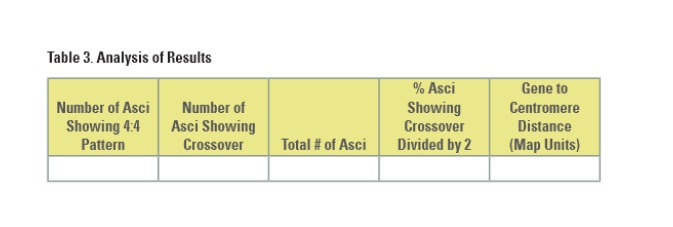

Rubric for Meiosis Lab: (New investigation 7B)
Title
Summary (what did you do, what did you learn...)
Do you know the following now?
• When is the DNA replicated during meiosis?
• Are homologous pairs of chromosomes exact copies of each other?
• What is crossing over?
• What physical constraints control crossover frequencies?
• What is meant by independent assortment?
• How can you calculate the possible number of different kinds of gametes?
• What happens if a homologous pair of chromosomes fails to separate, and how might this contribute to genetic disorders such as Down syndrome and cri du chat syndrome?
• How are mitosis and meiosis fundamentally different?
(include the answers to these questions in your paragraph).
1. Why did you divide the percentage of asci showing crossover (recombinant) by 2?
2. The published map distance between the spore color gene and the centromere is 26 map units. How did the class data compare with this distance?
3. How can you account for any disparities between the class data and the published
data?
4. Illustrate what happened during meiosis to produce the results you found.
5. Do you think the Philadelphia chromosome is a result of crossing over as seen in this part of the investigation or some other chromosomal abnormality? Explain your answer.
6. Do you think the cell cycle described for mitosis could be applied to meiosis as well?
Explain your answer.
7. Do you better understand mitosis and meiosis? Could you teach this to another class?
Include your data table and calculation of map units:

References